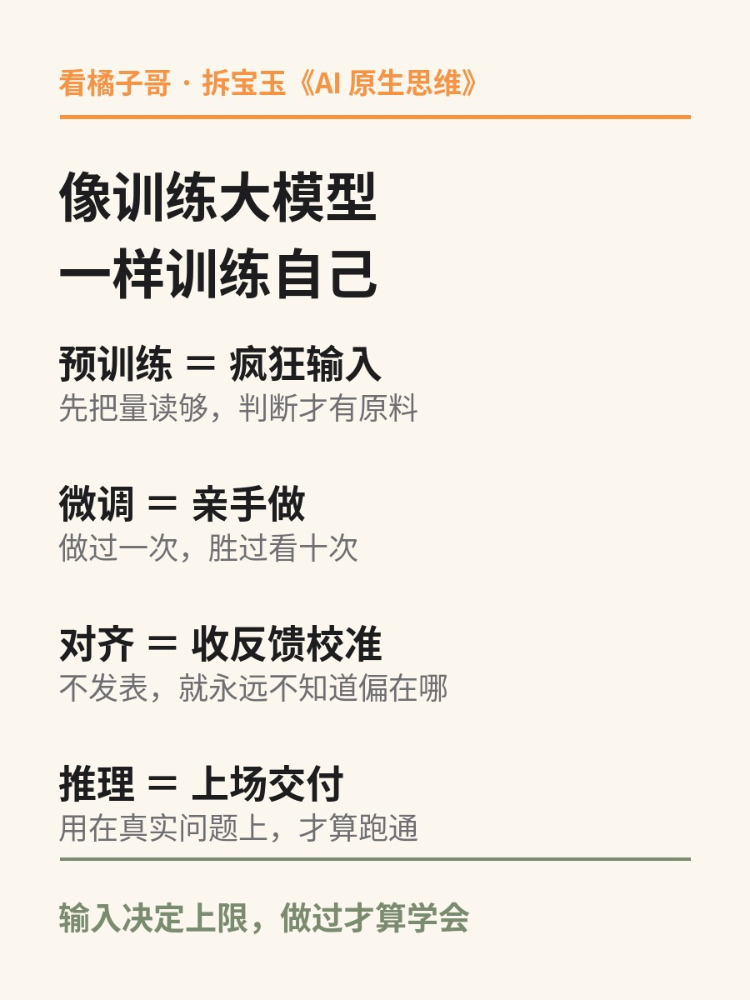
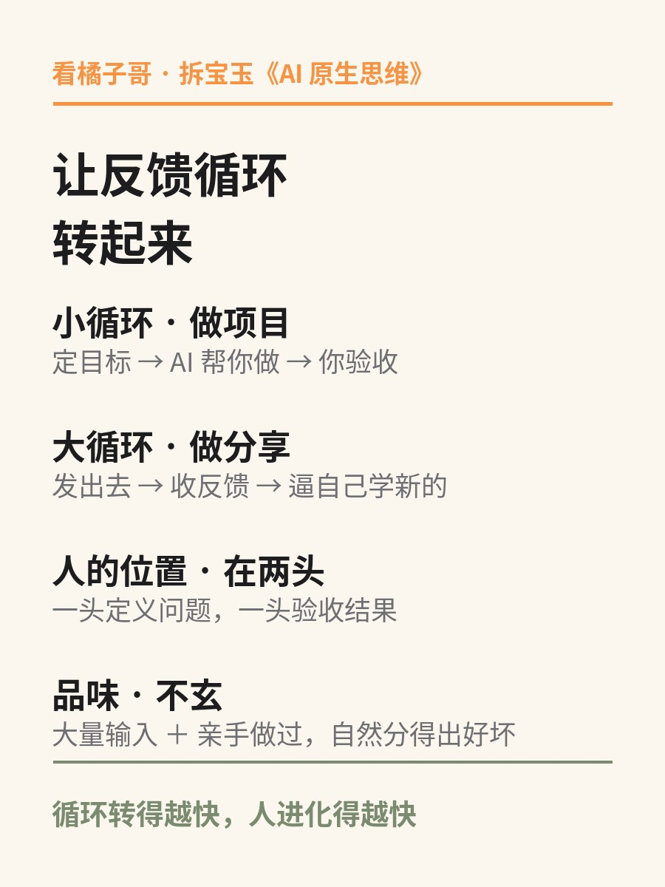

像训练大模型一样，训练你自己
你有没有过这种感觉：
课买了一堆，文章收藏了一堆，工具装了一堆。
过三个月回头看，自己好像还是老样子。
最近听一个做了三年 AI 产品的人分享，他叫宝玉。
他说了一句我记到现在的话：
人的成长，和训练一个大模型，是同一件事。
模型怎么变强的，人就怎么变强。一共四步。
1️⃣ 预训练 ＝ 疯狂输入
大模型变聪明之前，先读完了几乎整个互联网。
人也一样。你读得太少，判断就没有原料。
所谓「没想法」，很多时候不是脑子不行，是输入不够。
👉 先把量读够，你的上限才打得开。
2️⃣ 微调 ＝ 亲手做
模型光读书没用，还要在具体任务上一遍遍练。
人也一样。看十篇教程，不如自己动手做一次。
做砸了都没关系，那一次的体感，视频里永远学不到。
👉 做过一次，胜过看十次。
3️⃣ 对齐 ＝ 收反馈，校准方向
模型有个阶段叫「对齐」：靠人的反馈，纠正它跑偏的地方。
人也需要对齐。把你的作品发出去，听真实的反馈，
你才知道自己偏在哪。闷头学三年，可能一直在错的方向上努力。
👉 不发表，就没有对齐；没有对齐，努力会跑偏。
4️⃣ 推理 ＝ 上场交付
模型训练得再好，不拿出来解决问题，价值就是零。
人也一样。学的终点不是囤课，是把本事用在一个真实问题上，
做出一个能交付的东西。
👉 成长最后拼的不是学了多少，是交付了多少。

还有两句，我觉得是整场最狠的：
第一句：人的价值在两头。
一头是定义问题，一头是验收结果，中间的执行，放心交给 AI。
验收靠的是品味。品味一点都不玄：大量输入，再加上亲手做过。
读得多、做得多，好和坏摆在你面前，你自然分得出来。
第二句：让反馈循环转起来。
小循环做项目：定个目标，让 AI 帮你做出来，你验收。
大循环做分享：发出去，收反馈，反馈又逼你学新的东西。
循环转得越快，人进化得越快。

最后一句送给自己：
模型每次升级，都敢推翻自己的旧答案。
我们是不是也该定期问一句：我去年的经验，今年还成立吗？
你们现在卡在哪一步？是输入不够，还是做了不敢发出去对齐？
评论区聊聊，我看看大家都卡在哪一关。
这篇先把四个阶段讲清，下一篇我把「对齐」单独拆开：普通人怎么低成本地收到真实反馈，而不是自嗨式学习。
这篇的完整版，我做成了一期电台节目，在我的主页 juzige.com 能直接听，原文是宝玉的《AI 原生思维》，链接也放在那儿了。